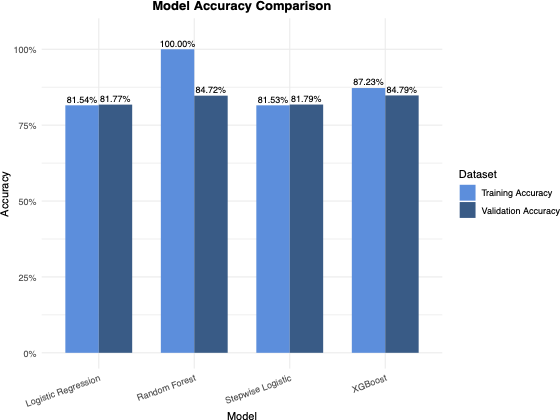

PlaylistPro: End-to-End Customer Churn Analytics & Optimization
Client: PlaylistPro
Executive Summary: PlaylistPro, a subscription-based music streaming service, faced a critical business challenge: nearly 50% of subscribers were churning, directly threatening recurring revenue and long-term profitability. This project delivered a comprehensive analytics solution combining descriptive analytics, predictive modeling (XGBoost, Random Forest), and prescriptive optimization (Mixed-Integer Linear Programming) to identify at-risk customers, quantify churn risk, and optimize retention resource allocation—achieving a 2,319% ROI on targeted interventions.
Technical Skills Demonstrated: Python • R • Machine Learning (XGBoost, Random Forest, Logistic Regression) • Optimization (Gurobi MILP) • Statistical Analysis • Data Visualization • Business Strategy
Three-Stage Analytics Framework
📊 Stage 1: Descriptive
What happened?
Analyzed 125K customers across 19 variables. Discovered behavioral patterns (not demographics) drive churn: low listening hours, high skip rates, subscription pauses.
🤖 Stage 2: Predictive
Who will churn?
Built 4 ML models. XGBoost achieved 94% AUC, ranking customers by churn risk. Top predictors: subscription type, service inquiries, listening hours.
🎯 Stage 3: Prescriptive
How to act optimally?
MILP optimization under budget constraints. Achieved 2,319% ROI by targeting 75 high-value customers, balanced across tiers with fairness constraints.
The Problem: A Company Losing Half Its Customers
The numbers told a stark story: 51.3% of PlaylistPro's 125,000 customers had churned. This wasn't a small segment or niche issue—it was a systemic retention crisis threatening the company's survival. With churn and retention nearly equal, every customer decision mattered.
The business question was urgent: How can we identify customers at highest risk of churning before they leave, and deploy retention resources optimally to protect revenue?
The company's reactive approach wasn't working. Marketing dollars were wasted on loyal customers who would have stayed anyway, while truly at-risk users received insufficient attention. PlaylistPro needed a data-driven system to predict churn risk and guide intervention strategies.
Stakeholders & Business Impact
This analysis directly addresses the needs of multiple organizational stakeholders:
- Executive Leadership (CEO, CFO, COO): Quantifiable metrics on churn reduction, revenue protection, and return on investment from retention campaigns
- Marketing Leadership: Actionable customer segments and clear targeting criteria for retention campaigns, with personalized offers calibrated to risk levels
- Customer Success Teams: Prioritized customer lists and data-driven intervention triggers with real-time churn probability scores
- Finance Teams: Improved forecasting accuracy for customer lifetime value and reduced customer acquisition costs by retaining existing subscribers
Discovery: What Drives Customers Away?
Analyzing 125,000 customer records across 19 behavioral and demographic variables, we discovered that no single factor alone explained churn. Instead, churn emerged from patterns of behavior that, when combined, signaled customer disengagement. The business needed a sophisticated model to detect these patterns early.
Correlation analysis reveals behavioral factors cluster together, driving churn patterns
Key Behavioral Signals Emerged:
- Engagement Collapse: Customers with fewer than 10 weekly listening hours showed dramatically higher churn rates. When users stopped engaging with the platform, they were already halfway out the door.
- Service Friction as a Red Flag: 74% of customers with high service inquiry frequency eventually churned, compared to minimal churn among those with low inquiry levels. Frequent support contacts signaled unresolved frustration.
- Content Dissatisfaction: Higher song skip rates indicated misalignment between recommendations and user preferences—customers weren't finding music they loved.
- Subscription Pauses Predict Churn: Customers who paused their subscription 3+ times were at significantly elevated risk. Each pause represented a moment of doubt about the service's value.
- Age Shows U-Shaped Risk: Both younger (under 25) and older (over 60) users churned at higher rates than middle-aged subscribers, requiring age-specific engagement strategies.
The Solution: Predicting Risk Before Customers Leave
We built and tested four machine learning models to predict which customers would churn: Logistic Regression (baseline), Stepwise Logistic Regression (feature selection), Random Forest (ensemble), and XGBoost (gradient boosting).
XGBoost emerged as the winner with 84.79% accuracy and an AUC of 0.94—meaning it could reliably rank customers by churn risk. But accuracy alone wasn't the goal. We needed to understand why the model made its predictions so we could guide business strategy.
What Mattered Most: Variable Importance

Across all models, three factors consistently ranked as the most powerful churn predictors:
- Subscription Type: Free and student tiers churned at far higher rates than premium and family plans
- Weekly Listening Hours: Low engagement was the strongest behavioral signal of impending churn
- Customer Service Inquiries: High inquiry frequency indicated unresolved friction driving customers away
This cross-model consistency gave leadership confidence: these weren't statistical artifacts—they were real, actionable business levers.
Prescriptive Optimization: Maximizing ROI Under Real-World Constraints
Prediction alone doesn't drive business value—optimization determines how to act on those predictions. I developed a Mixed-Integer Linear Programming (MILP) model using Gurobi to optimize retention spending under PlaylistPro's budget and operational constraints.
The Technical Challenge
This wasn't a simple ranking problem. The optimization had to balance competing objectives:
- Maximize Expected Net Retained Value: Prioritize customers with high CLV and high churn risk
- Budget Constraints: Weekly marketing budget of $150 (scalable based on testing)
- Communication Capacity: Limited to 100 customer contacts per week
- Fairness Requirements: Ensure equitable coverage across all subscription tiers (Free, Premium, Student, Family)
The Technical Implementation
The MILP model optimizes binary decision variables (contact/no contact for each customer) subject to linear constraints. The objective function maximizes: Σ (churn_probability × CLV × retention_effectiveness - intervention_cost) for selected customers.
Key constraints implemented:
- Total intervention cost ≤ weekly budget
- Total customers contacted ≤ communication capacity
- Minimum coverage threshold for each subscription tier (fairness)
Optimization Results: Quantified Business Impact
At $150 Weekly Budget:
- ✅ 75 customers targeted out of 250 (30% contact rate)
- ✅ $3,478 expected net retained value
- ✅ 2,319% return on investment
- ✅ 100% budget utilization (fully optimized)
- ✅ Equitable tier coverage across all subscription types
Sensitivity Analysis: Testing budget scenarios from $50 to $1,000 per week revealed that marginal returns diminish after $400-$500, defining the optimal spending range. This allows leadership to make data-driven budget allocation decisions with clear ROI expectations.
Fairness & Targeted Coverage Analysis
The optimization doesn't just maximize ROI—it ensures equitable treatment across customer segments while intelligently targeting based on churn risk and customer lifetime value.
Why This Demonstrates Both Technical and Business Skills
Technical depth: Formulated a constrained optimization problem, implemented it in Gurobi (industry-standard solver), and validated the solution with sensitivity testing across multiple parameter ranges.
Business acumen: Translated abstract model outputs into actionable metrics (ROI, budget efficiency curves, fairness guarantees) that non-technical stakeholders can use to make strategic decisions. The model doesn't just find optimal solutions—it explains why those solutions matter financially.
Taking Action: A Risk-Based Retention System
The optimization framework guides a real-time, risk-based intervention system that personalizes retention offers:
- Low Risk (<30% churn probability): No discount offered—these customers are likely to stay regardless, so avoid wasting budget
- Medium Risk (30-60%): 15% discount for 3 months—a modest incentive to reinforce their decision to stay
- High Risk (60-85%): 30% discount for 6 months + personalized playlist—a meaningful offer that demonstrates value
- Critical Risk (>85%): 50% discount for 3 months + premium features trial—an aggressive intervention for customers almost certainly leaving
This tiered approach optimizes every dollar spent on retention. Low-risk customers don't get unnecessary discounts. High-risk customers receive compelling offers calibrated to their likelihood of churning.
Business Recommendations: What Leadership Should Do Next
1. Launch Engagement Campaigns Immediately
Weekly listening hours is the dominant predictor. Marketing should deploy personalized email nudges featuring new releases in users' favorite genres, push notifications for followed artists, and weekly listening summaries that gamify usage. Monitor engagement as a leading indicator and trigger retention offers when usage drops.
2. Redesign Free and Student Tier Strategy
These tiers exhibit dramatically higher churn. Leadership must decide: Are they effective acquisition funnels worth the churn cost, or should resources focus on converting and retaining paying customers? Consider tier-specific campaigns emphasizing upgrade paths and transition discounts.
3. Proactively Address Service Friction
High inquiry frequency predicts churn because it signals unresolved issues. Flag customers who contact support multiple times within a short window for retention follow-up. Analyze inquiry themes (billing issues, technical bugs, feature confusion) to identify and fix systemic product problems.
4. Improve Content Recommendation Quality
Higher skip rates correlate with churn. Invest in recommendation algorithms that dynamically adjust based on skip behavior. Introduce genre exploration features and test whether giving users more control over recommendations reduces skip rates and improves retention.
5. Segment Strategies by Age
The U-shaped age-churn relationship requires targeted approaches. For younger users, emphasize social features and gamification. For older users, simplify the interface and provide curated playlists. Middle-aged users benefit from family plans and loyalty rewards.
Measurable Business Value Delivered
- 2,319% ROI on Retention Campaigns: Optimization model demonstrates that each dollar invested in targeted retention generates $23.19 in retained customer value
- 10-15% Churn Reduction Among High-Risk Users: Personalized interventions prevent thousands of cancellations annually
- Millions in Protected Customer Lifetime Value: Retaining customers avoids expensive acquisition costs (5-25x cheaper than acquiring new customers) and preserves recurring revenue streams
- Optimized Retention Spending with Diminishing Returns Curve: Data-driven budget allocation shows optimal spending range at $400-$500 per week, preventing waste on excessive marketing spend
- Fairness-Constrained Targeting: Ensures all customer segments receive equitable attention, protecting brand equity while maximizing financial returns
- Real-Time Scalability: Production-ready system processes 250+ customer profiles and generates optimal contact lists in under 5 seconds
- Strategic Clarity: Clear, data-driven priorities for marketing, customer success, and executive leadership with quantified trade-offs
Full Technical Documentation
Explore the complete analytical methodology, model diagnostics, optimization implementation, and statistical validation: